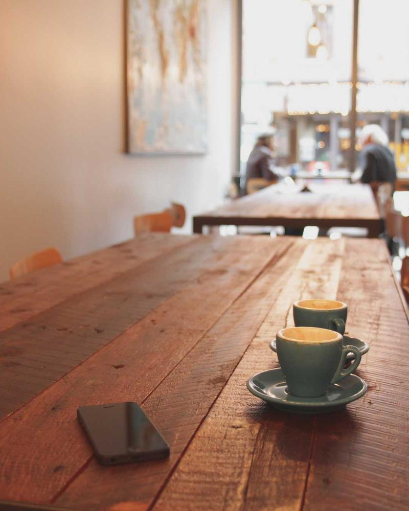

앱이 정하는 이름
나의 기록 · 사진에 그리기
일기 쓰기 · 나의 일기
일기 제목 / 사진 이야기 / 선택
18번 연결 엽서의 모습과, 직접 쓴 글이 중심이 되는 구성.
이제 모든 화면을 같은 기준으로 만듭니다.
일기 제목은 하나. 사진마다 이야기를 선택해서 적습니다.
나의 기록 · 사진에 그리기
일기 쓰기 · 나의 일기
일기를 대표하는 제목 하나.
사진마다 짧은 선택 메모.
기록 날짜 · 사진 번호 · 사진 수
날짜는 오늘로 시작하고 바꿀 수 있습니다.입력 라벨은 남고, 안내 문구는 입력하면 사라집니다.
가이드 예시이며 입력 내용은 저장하지 않습니다.

창가에서 마신 따뜻한 커피.
작성한 제목과 사진 이야기를 그대로 표시합니다.
제목이 없으면 기록 날짜로 ‘10월 19일의 기록’을 표시합니다. 사진 이야기가 없으면 완성 화면에서 메모 자리를 숨깁니다. 자동 제목은 입력값으로 저장하지 않습니다.
바탕·엽서·조작부를 구분합니다. 사진과 그린 선의 색은 그대로 유지합니다.
주 행동은 actionBackground + actionText, 본문은 text, 보조 글은 textSecondary를 씁니다. 장식 구분선과 입력 경계는 별도 토큰입니다. 시스템·라이트·다크를 지원하며 v1.0의 색상 테마는 리넨 하나입니다.
Android 시스템 산세리프. 본문 16sp, 라벨 14sp, 보조 정보 12sp를 기준으로 합니다.
| 역할 | 크기 / 줄 높이 / 굵기 | 표현 |
|---|
화면 여백 20dp · 카드 안 16dp
항목 사이 12dp · 섹션 사이 24dp
사진은 곧게, 엽서는 부드럽게.
행동 버튼은 둥글게 만듭니다.
최종 8화면의 320×700 전화기 그림은 압축된 비교 시안입니다. 실제 앱은 이 문서의 dp/sp를 사용합니다. 글씨 200%에서 텍스트를 줄이지 않고 높이·줄바꿈·스크롤을 조정합니다.
최소 48dp 터치 영역. 색상뿐 아니라 이름·윤곽·선택 상태로 행동을 구분합니다.
기본 · 보조 · 비활성 · 처리 중의 외형 예시.
실제 앱에서는 저장 결과를 확인한 뒤 완료를 알립니다.
펜 선택됨. 배경·윤곽·도구 이름으로 선택을 알립니다.
날짜 입력의 상태 예시입니다. 라벨은 입력 후에도 남습니다.
버튼과 도구는 디자인 상태 예시입니다. 실제 저장·그리기 기능은 연결되어 있지 않습니다.
두 장의 엽서는 대표 모습입니다. 한 장과 긴 글도 같은 기록으로 존중합니다.
한 장의 엽서로 완성합니다.
빈 두 번째 칸은 만들지 않습니다.
홈은 나란히, 상세는 위아래로.
사진별 이야기와 그림을 연결합니다.
홈은 앞의 두 장과 전체 수.
상세는 모든 사진을 순서대로 표시합니다.
사진은 원본 비율을 유지합니다. 좁은 화면과 큰 글씨에서는 사진 옆 메모를 아래로 옮기고 세로로 읽습니다. 홈만 두 줄 말줄임을 허용하고 작성·상세는 전체 내용을 보여줍니다.
저장 실패에도 글과 그림을 남깁니다. 완료 문구는 실제 성공 뒤에 표시합니다.
아직 남긴 기록이 없어요
사진으로 시작하기작성하던 기록이 있어요
이어 쓰기 / 초안 버리기저장하지 못했어요.
다시 시도해 주세요.
아이콘이 작아도 터치 영역은 확보합니다. 이웃한 버튼과 겹치지 않습니다.
높이와 줄바꿈을 조정합니다. 잘린 글이나 접근할 수 없는 저장 버튼을 남기지 않습니다.
활성 텍스트의 내부 검수 기준입니다. 필수 입력 경계·아이콘은 3:1 이상을 확인합니다.
테마 → 버튼·입력·엽서 → 핵심 4화면 순으로 구현합니다.
캘린더·설정·백업 등 나머지 화면은 이 기준으로 설계합니다.
현재는 디자인 기준과 시안이 확정된 단계입니다. Android 화면·접근성·실기기 검증은 구현 후 진행합니다.